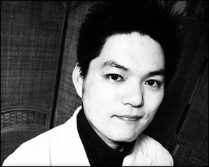
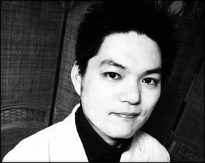

YaneDaisuke
1982年生、大阪在住、スマホサービスの開発会社にて、Androidアプリ開発のPM 兼 人事を担当。
過去に個人活動でアルファブログの運営や、BtoCのサービスを多数展開。
ようやく希望の職に辿り着き、今後は本業に専念する為、個人活動は2013年の転職をもって完全停止
インタビューや執筆のご依頼など、お問い合わせがありましたら、引き続きお気軽にご連絡下さい！

1982年生、大阪在住、スマホサービスの開発会社にて、Androidアプリ開発のPM 兼 人事を担当。
過去に個人活動でアルファブログの運営や、BtoCのサービスを多数展開。
ようやく希望の職に辿り着き、今後は本業に専念する為、個人活動は2013年の転職をもって完全停止
インタビューや執筆のご依頼など、お問い合わせがありましたら、引き続きお気軽にご連絡下さい！